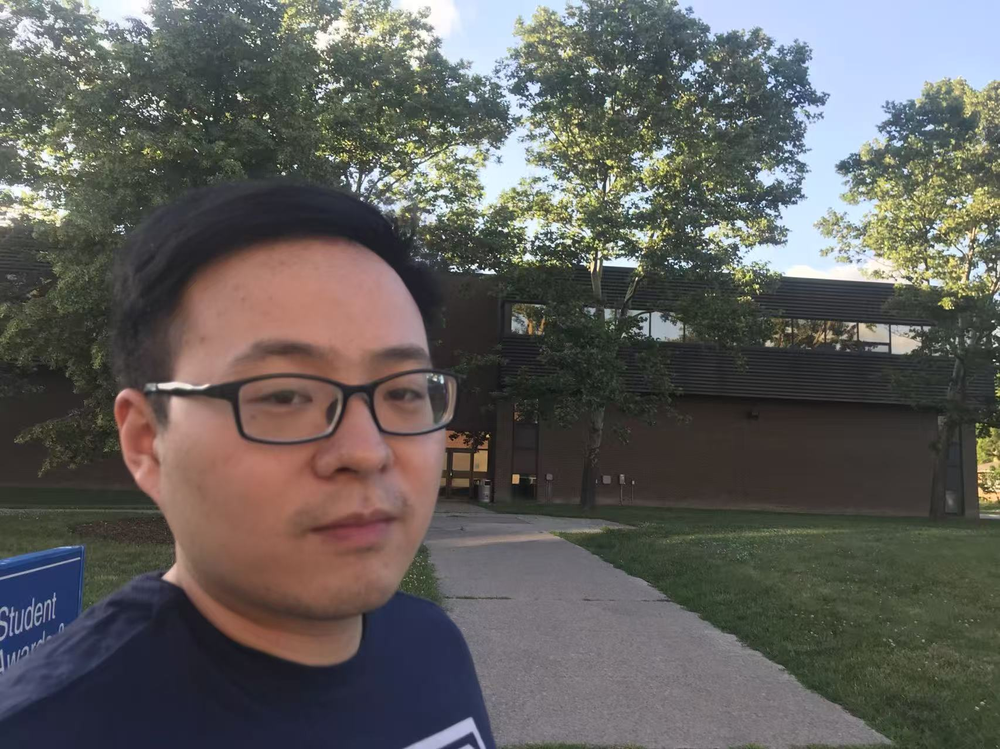

West–East Reciprocal Learning
The Canada–China Sister School Network and a six-country partnership (Canada, USA, Australia, Tanzania, UK, Brazil, China) on global stewardship and sustainability.

Adjunct Assistant Professor · Post-Doctoral Fellow · Book Review Editor
Education researcher working at the intersection of Canadian and Chinese school systems. I study West–East reciprocal learning, narrative inquiry, and what generalist and specialist teaching models reveal about how teachers come to know — and become — who they are.
My scholarship sits at the meeting point of comparative education, teacher education, and lived narrative. The throughline is reciprocal learning — the practice of holding two traditions in respectful, generative conversation so that each becomes more fully itself.
The Canada–China Sister School Network and a six-country partnership (Canada, USA, Australia, Tanzania, UK, Brazil, China) on global stewardship and sustainability.
Working in the Connelly–Clandinin tradition, with attention to teachers' best-loved selves, silence, and the storied landscapes of practice.
Elementary teacher education models in Canada and China — what each tradition assumes about subject, child, and the architecture of a school day.
Cross-cultural studies of inquiry-based learning, mathematical taste (数学味), and the fang-shou rhythm of Chinese lesson design.
Multiliteracies and arts-based pedagogy with English Language Learners; wellbeing in language education.
Tianrenheyi (天人合一), Ye Lan's 生命自觉, and the scholarship of Tu Weiming, Gu Mingyuan, Li Zijian, Jin Yaoji, and David Hansen.
Public scholarship in The Conversation.
I teach across pre-service and graduate teacher education, with a commitment to inquiry-based and community-grounded pedagogy.
Faculty of Education, University of Windsor · Pre-service (Fall 2025)
Designed and taught using a Knowing–Doing–Being framework, integrating sustainability education, community-based learning, and interdisciplinary pedagogy.
Graduate level · Fall 2025
Graduate level · Winter 2026
Graduate level · Summer 2026
Currently serving as Master's Thesis Committee Member / Second Reader for three M.Ed. candidates at the University of Windsor (March 2026–present): C. Liu, Z. Fan, and A. Huang.
I welcome conversations about reciprocal learning, narrative inquiry, comparative teacher education, and collaborative writing — in English or in Mandarin.
AffiliationFaculty of Education, University of Windsor · OISE, University of Toronto